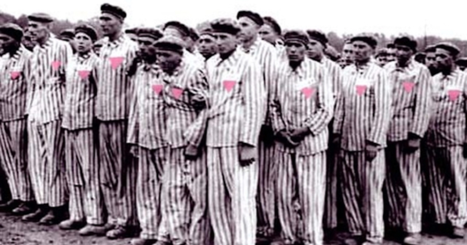
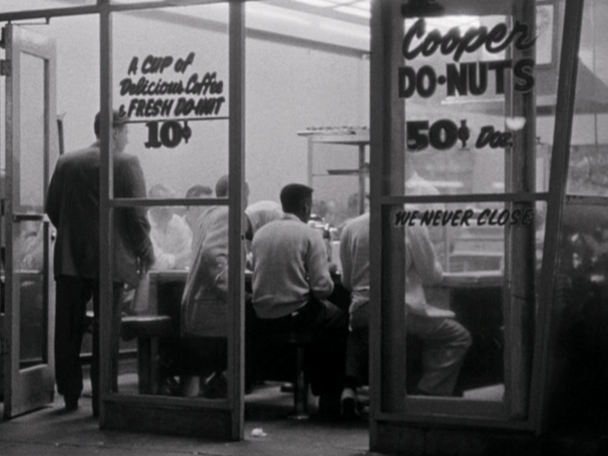

State violence was another key form of repression faced by the LGBTQ+
community during the 20th century, extending beyond legal criminalization
into everyday life. Police forces and state authorities played a central role in
enforcing laws, often using intimidation, surveillance, and physical
violence against the LGBTQ+ community. Raids on private homes, bars, and meeting
places were common, as these spaces were seen as "hubs of illegal activity".
Individuals suspected of homosexuality or other minorities could be arrested
without strong evidence, and many were publicly humiliated,
interrogated, and abused. This constant threat created fear.

In Nazi Germany, the enforcement of Paragraph 175 led to an increase in arrests, during which individuals were subjected to brutal interrogations and physical abuse. Many were later deported to concentration camps, where violence was extreme and often leading to death. The use of the pink triangle for gay men was deployed in 1937 to shame and distinguish them among other prisoners. But Germany was not the only state to use this method. Many countries with the same ideology frequently practiced those methods. The Soviet Union similarly arrested individuals based on suspicion, often relying on denunciations of colleagues, neighbours or even family members. Those arrested were sent to Gulag camps (forced labour camps in the Soviet Union from the 30's until the early 50's) where most perished.
Over time, this constant repression led to growing resistance within the LGBTQ+ community. One early example of this is the Cooper Do-nuts Riot (1959) in Los Angeles, which is often considered one of the first LGBTQ+ uprisings against police violence. Although documentation of the event is limited, we know that people fought back against the police. This resistance grew over the years and culminated in the Stonewall uprising (1969) in New York City. The rebellion began after a police raid on the Stonewall Inn (a bar where members of the LGBTQ+ community met). Members of the LGBTQ+ community fought back against repeated abuse and discrimination. The event lasted several days with constant fights with the police and protesters, marking a turning point, as the event sparked a new wave of activism and led to the development of the modern gay rights movement.